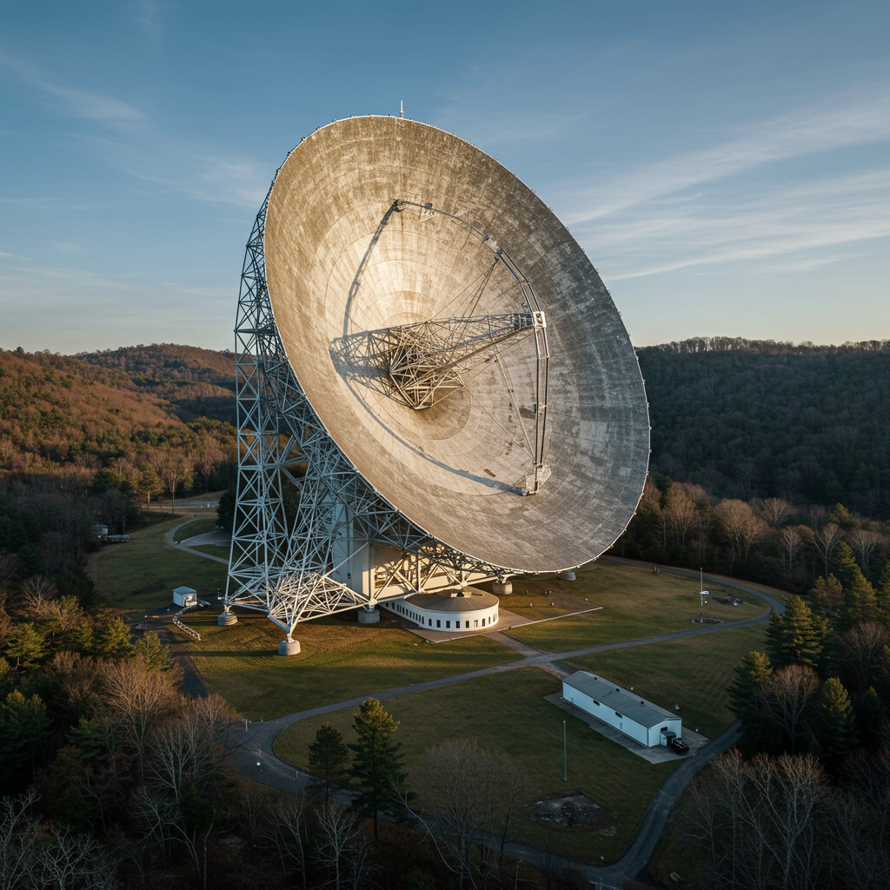

Green Bank Observatory
Ubicación: West Virginia, Estados Unidos
Inicio de operaciones: 1958 (activo hasta hoy)
Tipo de instalación: Radiotelescopio direccional de gran apertura
Objetivo
Explorar el universo en radiofrecuencias para estudiar formación estelar, galaxias, púlsares, moléculas interestelares y realizar búsquedas de inteligencia extraterrestre (SETI).
Principales descubrimientos
- Detección de moléculas complejas en nubes interestelares.
- Estudios de púlsares y de la estructura de la Vía Láctea.
- Participación en experimentos del programa SETI.
- Observaciones detalladas de galaxias cercanas.
Aportación histórica
El Green Bank Telescope (GBT) es el radiotelescopio totalmente direccionable más grande del mundo (100 m de apertura). Es un ícono de la radioastronomía moderna, con avances en astroquímica, formación estelar y la búsqueda de vida inteligente. Forma parte de la "zona de silencio de radio" en Virginia Occidental, donde se minimiza la interferencia.
Significado del nombre
El observatorio toma su nombre del pueblo de Green Bank, donde se encuentra ubicado. "Green Bank" alude al paisaje verde y montañoso de la región, ideal para aislar señales de radio terrestres.
Estado actual
Activo y operativo. El Green Bank Observatory sigue siendo uno de los centros de radioastronomía más avanzados del mundo. Participa en proyectos internacionales como Breakthrough Listen para buscar señales de civilizaciones avanzadas.